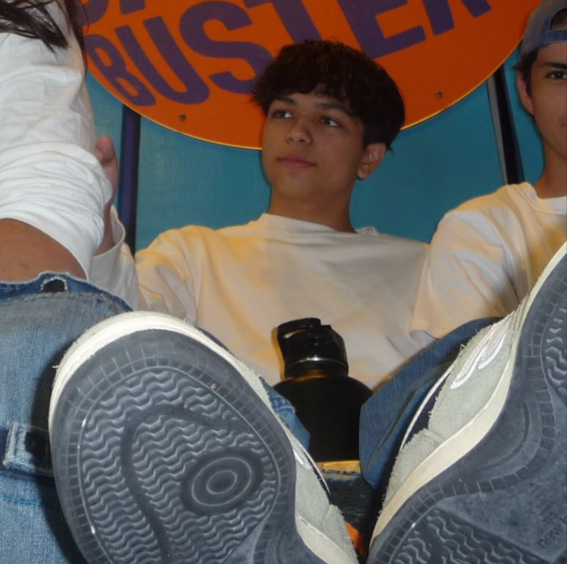

guest@site:~$ whoami
Curious how I learned to create this page? Check out this small collection of resources :)
resourcesHi!! I'm Felipe, a Computer Engineering student at UF who enjoys developing small and creative CS/CE related projects
Most of my time goes into college classes, experimenting with AI tools, random side projects, learning software development, and any idea related whatever random hyperfixation I have going on that week
When I'm not working on something, I'm either at the gym, racing on my racing sim, traveling, playing video games, or out hanging out with my friends
Feel free to reach out to me on LinkedIn!

The professional side of all of this
Identidad Telecom
Software Engineering Intern
Miami, Florida
lore
(my life's faqs)